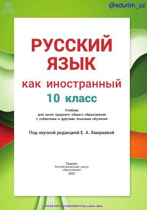

1R10-sinflar uchun rus tili fani bo'yicha amaldagi davlat darsligi.
Mazkur 10-sinf rus tili darsligi o'zbek va boshqa tillarda o'qitiladigan umumiy o'rta ta'lim maktablari uchun mo'ljallangan bo'lib, B1+ darajasidagi talablar asosida tayyorlangan. Kitobda nutqiy faoliyatning barcha turlari ustida tizimli ravishda ishlash, shuningdek, QR-kodlar yordamida audio materiallarni tinglash imkoniyati ko'zda tutilgan.